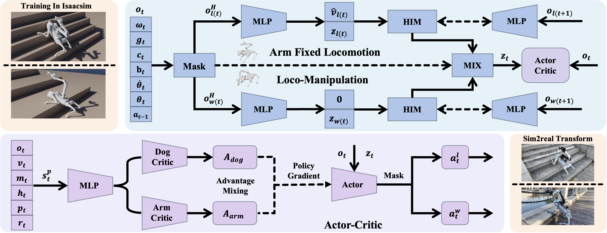
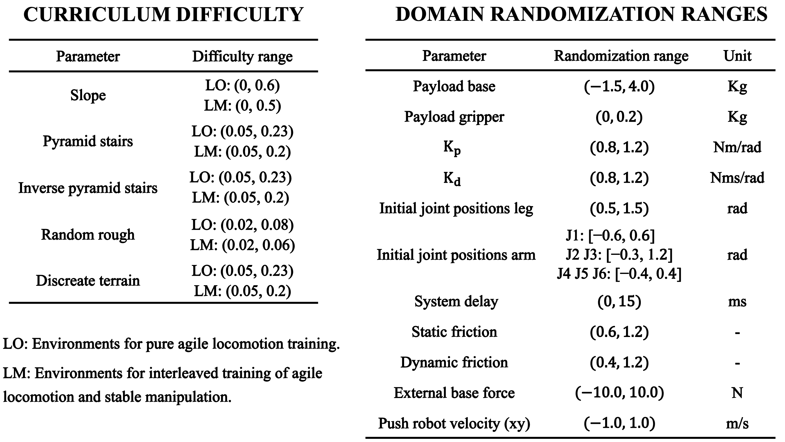
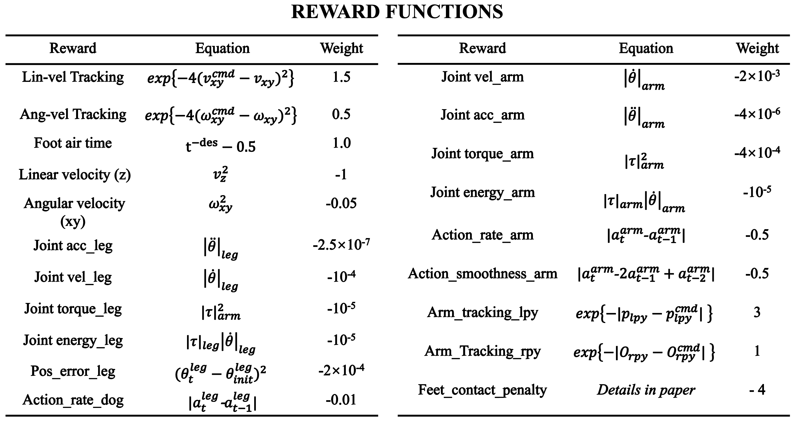

Equipping quadruped robots with manipulators significantly expands their operational workspace. However, for small-scale systems constrained by limited joint torques, achieving robust whole-body control on unstructured terrains remains a substantial challenge. Existing learning-based methods often face an inherent trade-off between locomotion stability and manipulation dexterity: traversing rough terrains introduces continuous base perturbations that constantly disturb state observations, significantly disrupting precise manipulation learning, whereas training exclusively on flat ground fails to yield robust locomotion skills for unstructured environments. To address these challenges, we propose Qlimb, a novel end-to-end whole body control framework tailored for small-scale quadruped manipulators.
We introduce a latent belief mixing mechanism that adaptively fuses mode-specific state representations to decouple state estimation for agile locomotion and stable manipulation within a unified policy, enabling seamless transitions between mobility and interaction modes. Furthermore, the policy exhibits emergent leg-arm coordination, ensuring smooth postural adaptations and intrinsic self-balancing during manipulation. Extensive real-world experiments demonstrate that QLIMB enables small-scale quadruped manipulators to achieve robust locomotion and stable manipulation on challenging terrains.
We present QLIMB, a single-stage, end-to-end RL framework designed to enable robust loco-manipulation.

The training is conducted in Isaac Lab, simulating various terrain properties and disturbances to ensure robust Sim-to-Real transfer.
QLIMB uses terrain curriculum training and carefully designed reward terms to learn robust locomotion-manipulation transitions in Isaac Lab.


Test Case 1
Test Case 2
Test Case 3
Test Case 4
Test Case 5
Test Case 6
Test Case 1
Test Case 2
Test Case 3
Test Case 4
Test Case 5
Test Case 6
Test Case 1
Test Case 2
Test Case 3
Test Case 4
Test Case 5
Test Case 6
@article{qlimb2026,
author = {Anonymous Authors},
title = {Qlimb: End-to-End Whole-Body Control for Quadruped Loco-Manipulation and Balance on Complex Terrains},
journal = {Under Review at IEEE RAL},
year = {2026},
}